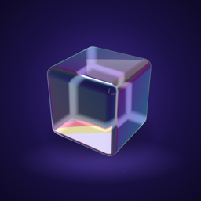
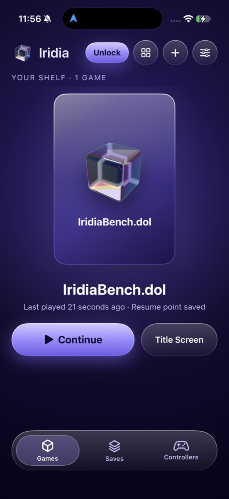
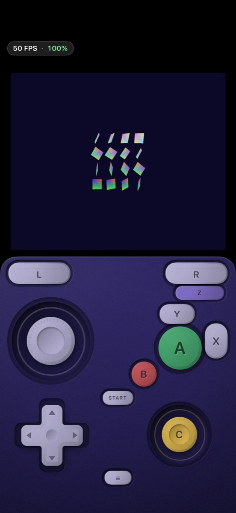

Iridia
Play the GameCube games you own on iPhone and iPad, and now Wii U games too (experimental). Iridia is an emulator on the App Store: no JIT, no sideloading, made for Apple devices.
Free to download. Every game launch includes free play time (10 minutes for GameCube, 20 for Wii U), and one one-time purchase unlocks unlimited play for both.


Why Iridia
- Straight from the App Store. Iridia runs without JIT, so there's nothing to sideload and no extra steps.
- GameCube and Wii U in one app. Your GameCube shelf, plus a Wii U section with its own controls.
- Fast on iPhone. A tuned interpreter and Metal graphics, with up to 8x internal resolution for GameCube on recent iPhones.
- Touch or controller. Touch controls that look and feel like the real pad, or use any MFi, Xbox, PlayStation or Switch controller.
- Pick up where you left off. Save states, memory cards and per-game settings.
- Private. No ads, no tracking, no account.
Wii U (experimental)
- Both screens, your way. TV only, TV with the GamePad in a small window, GamePad full screen, or both stacked on iPad and iPhone in portrait. Swap the two screens any time, and each game remembers its layout.
- Touch the GamePad screen. Tap and draw right on the GamePad picture, with your finger or Apple Pencil.
- Motion controls. Tilt your iPhone or iPad to aim, like the GamePad.
- Needs 8 GB of memory: iPhone 15 Pro, any iPhone 16 or newer, iPad with M1 or later, or iPad mini with A17 Pro. Games may run slowly or show glitches.
Questions
Is there a GameCube emulator on the App Store?
Yes. Iridia is a GameCube emulator available on the App Store for iPhone and iPad. Download it free, add your own game files, and play.
Is there a Wii U emulator for iPhone?
Yes. Iridia on the App Store has experimental Wii U support next to its GameCube library. It needs a device with 8 GB of memory (see above). Wii U support is new: games may run slowly or show glitches, so use the free play time to check your games first.
How do I play GameCube games on my iPhone?
Install Iridia from the App Store, then add your game files:
- In Iridia, tap Choose a Game File, or
- In the Files app, copy them to On My iPhone → Iridia → Games.
ISO, RVZ, GCM and CISO files work. ZIP and 7Z archives are unpacked for you.
How do I play Wii U games on my iPhone?
Install Iridia and tap Wii U in the tab bar. In the Files app, copy your own game files and your keys.txt to On My iPhone → Iridia → Wii U. Disc images (WUD, WUX), installed title folders and homebrew (RPX) work.
Does Iridia need JIT or sideloading?
No. Iridia runs without JIT, for GameCube and Wii U, so it works straight from the App Store with no sideloading, no AltStore and no debugger.
Does Iridia come with games?
No. Iridia doesn't include any games, keys, BIOS or firmware. You play game files you own: your disc backups or homebrew.
Which iPhones work?
GameCube needs an iPhone 12 or newer. Wii U needs a device with 8 GB of memory. How well a game runs depends on the game and on your device, so use the free play time to check your games before you buy the unlock.
Is Iridia free?
Iridia is free to download. Every GameCube game launch gives you 10 minutes of free play and every Wii U game launch 20 minutes, as often as you like. One one-time purchase unlocks unlimited play for both. No subscription.
GameCube and Wii U are trademarks of Nintendo. Iridia is not affiliated with or endorsed by Nintendo.